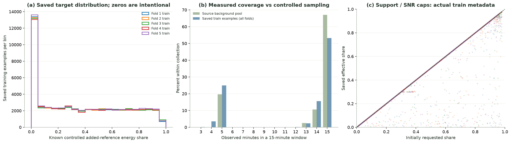

group_cv_physics_v2_r1 · 2026-10-25 KST
데이터·전처리·실행 검증 완료. 실제 GPU 본학습과 서버 CUDA 실측은 아직 수행하지 않았습니다.
현재 정본: 데이터 구축·전처리 Markdown 보고서 →
| Train | Inner | Outer | 학습 설정 |
|---|---|---|---|
| 267,837 | 15,000 · 기존 bytes 유지 | 15,000 · 기존 bytes 유지 | 최대60epoch / patience7 / Adam |
각 fold의 clean primary 배경을 정확히 한 번 사용합니다. 원천 분리와 900초 support 기준 24시간 purge는 유지했습니다.
Target 오차 최대3.64×10⁻⁷, 양성→0 오류0건. SNR20dB는 새Train의 합성 분별25대역 에너지비 가정이며 현장 물리 한계나 개별 대역·순간 peak 상한이 아닙니다. 고정평가에는 새Train 증강을 적용하지 않았습니다.

모델 성능 그래프가 아닌 실제 저장 데이터입니다.
데이터 독립 검증 · 모델 검증 · CV 연결 검증 · 실제5-fold 사전검증
GPU 첫 단계는 RTX4090에서 버전·메모리·속도를 확인하는 것입니다. 현재2.8/CUDA12.8 환경은 아직 접속하지 않았습니다. 공식 제출·공개 고지·sealed 평가는 자동 수행하지 않습니다.